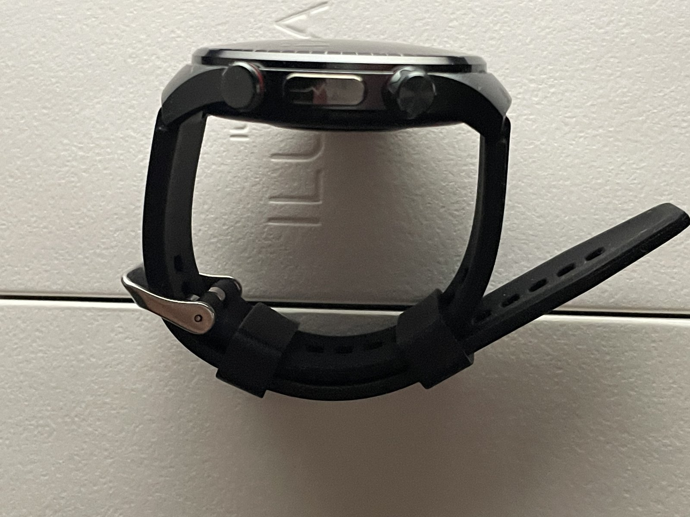
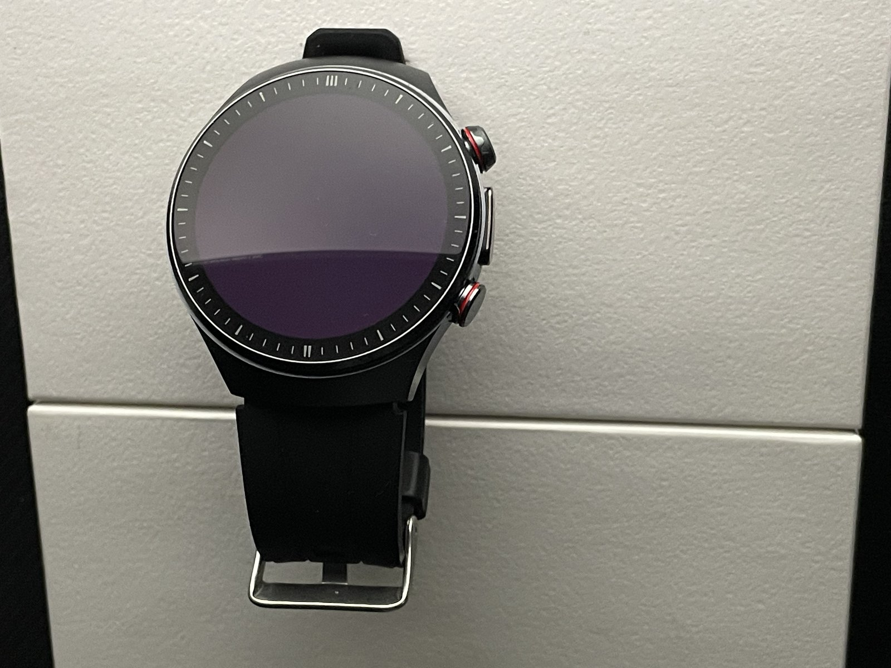
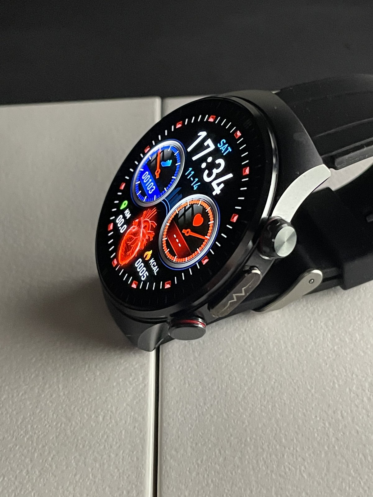
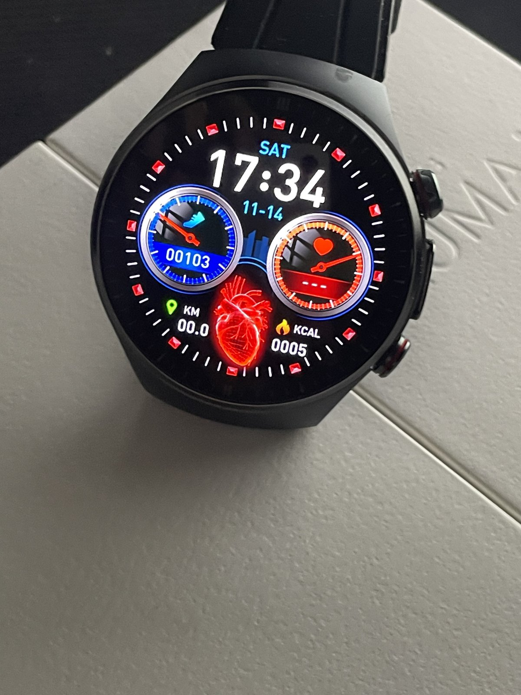

Compatible device
ET488 Smartwatch
Compatible smartwatch for activity tracking and general wellness measurements with TamyrFlow.
TamyrFlow pairs with a compatible ET488 over Bluetooth, receives supported wellness measurements from the watch hardware, and shows values, trends, and history in the app. Availability of each metric depends on the device hardware and firmware.

Add assets/et488/front.jpg
Add assets/et488/side.jpg
Add assets/et488/angle.jpg
Add assets/et488/back.jpgSupported Features
TamyrFlow can display the following wellness and activity data when provided by a compatible ET488. Availability depends on the smartwatch hardware and firmware. These measurements are for general fitness and wellness — not medical-grade claims.
-
Heart Rate (Pulse)
Pulse readings received from the connected watch.
-
Blood Oxygen (SpO₂)
SpO₂ values when supported by the device.
-
Body Temperature
Temperature readings when a sensor is available.
-
Blood Pressure
Blood pressure values when supported by firmware.
-
Daily Steps
Step count synchronized from the watch.
-
Activity Tracking
Activity progress and related fitness data in the app.
-
Measurement History
Past readings, charts, and trends in TamyrFlow.
-
Bluetooth Synchronization
Pairing and data sync over Bluetooth.
How It Works
A simple flow from install to viewing wellness data. Some TamyrFlow screens remain available without a connected watch; live measurements require a paired compatible device.
-
1
Install TamyrFlow
Download the iOS app and create or sign in to your account.
-
2
Connect ET488 via Bluetooth
Pair a compatible ET488 smartwatch. Location permission may be requested only to help find nearby Bluetooth devices.
-
3
Start a supported measurement
Use the smartwatch to run a supported wellness measurement.
-
4
View data in TamyrFlow
Review received values, trends, and history in the app.
Device Documentation
Supporting documents for the ET488. PDFs open at public URLs when a verified file is available. Documents pending verification are labeled accordingly — no fabricated certificates or unverified “Verified” badges.
Information for App Review
TamyrFlow displays wellness measurements received from compatible smartwatches.
The application does not independently measure physiological parameters or claim medical-grade accuracy.
Supporting device documentation is provided above where available.
TamyrFlow is intended for fitness and general wellness use only.